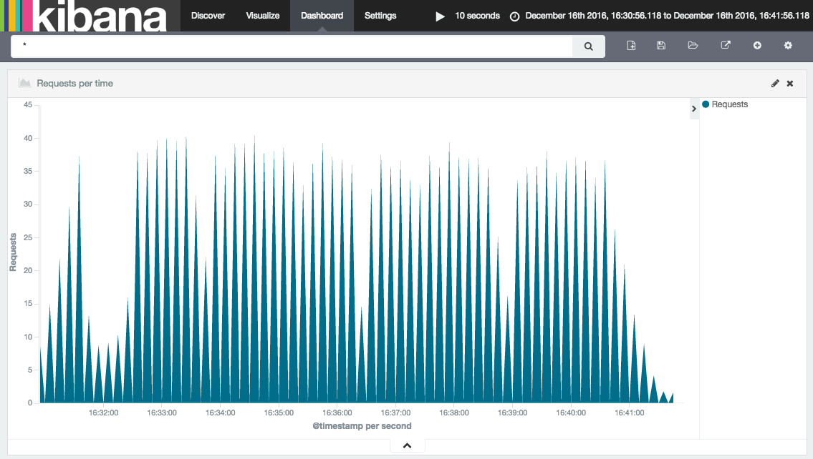

By this point you should be familiar with the fundamental concepts behind both Apache Brooklyn and YAML blueprints. This section of the documentation is intended to show a complete, advanced example of a YAML blueprint.
The intention is that this example is used to learn the more in-depth concepts, and also to serve as a reference when writing your own blueprints. This page will first explain what the example application is and how to run it, then it will spotlight interesting features.
Please note, there is now a much more up-to-date ELK blueprint that can be found here. We've using an older version of this in the tutorial as it highlights some key Brooklyn concepts.
ELK Stack Example
This example demonstrates the deployment of an ELK Stack (Elasticsearch, Logstash and Kibana), using the provided blueprint to deploy, install, run and manage all three. Briefly, the component parts are:
- Elasticsearch: A clustered search engine
- Logstash: Collects, parses and stores logs. For our example it will store logs in Elasticsearch
- Kibana: A web front end to Elasticsearch
We also deploy a simple webserver whose logs will be collected.
- Tomcat 8: Web server whose logs will be stored in Elasticsearch by Logstash.
For more about the ELK stack, please see the documentation here.
The Blueprints
There are four blueprints that make up this application. Each of them are used to add one or more catalog items to Brooklyn. You can find them below:
Running the example
First, add all four blueprints to the Brooklyn Catalog. This can be done by clicking the 'Catalog' tab, clicking the '+'
symbol and pasting the YAML. Once this is done, click the 'Application' tab, then the '+' button to bring up the add
application wizard. A new Catalog application will be available called 'ELK Stack'. Using the add application wizard,
you should be able to deploy an ELK stack to a location of your choosing. Alternatively use the br Brooklyn
command line tool and add the files with br catalog add.
Exploring the example
After the application has been deployed, you can ensure it is working as expected by checking the following:
- There is a Kibana sensor called
main.uri, the value of which points to the Kibana front end. You can explore this front end, and observe the logs stored in Elasticsearch. Many Brooklyn applications have amain.uriset to point you in the right direction. - You can also use the Elasticsearch REST API to explore further. The Elasticsearch Cluster entity has a
urls.http.listsensor. Using a host:port from that list you will be able to access the REST API. The following URL will give you the state of the clusterhttp://<host:port>/_cluster/health?pretty=true. As you can see thenumber_of_nodesis currently 2, indicating that the Elasticsearch nodes are communicating with each other.
Interesting Feature Spotlight
We will mainly focus on the Elasticsearch blueprint, and will be clear when another blueprint is being discussed. This blueprint describes a cluster of Elasticsearch nodes.
Provisioning Properties
Our Elasticsearch blueprint has a few requirements of the location in which it is run. Firstly, it must be run on an
Ubuntu machine as the example has been written specifically for this OS. Secondly, two ports must opened to ensure
that the entities can be accessed from the outside world. Both of these requirements are configured via
provisioning.properties as follows:
brooklyn.config:
elasticsearch.http.port: 9220
elasticsearch.tcp.port: 9330
provisioning.properties:
osFamily: ubuntu
inboundPorts:
- $brooklyn:config("elasticsearch.http.port")
- $brooklyn:config("elasticsearch.tcp.port")
VanillaSoftwareProcess
When composing a YAML blueprint, the VanillaSoftwareProcess is a very useful entity to be aware of. A VanillaSoftwareProcess will instruct Brooklyn to provision an instance, and run a series of shell commands to setup, run, monitor and teardown your program. The commands are specified as configuration on the VanillaSoftwareProcess and there are several available. We will spotlight a few now. To simplify this blueprint, we have specified ubuntu only installs so that our commands can be tailored to this system (e.g. use apt-get rather than yum).
Customize Command
The Customize Command is run after the application has been installed but before it is run. It is the perfect place to create and amend config files. Please refer to the following section of the Elasticsearch blueprint:
customize.command: |
sudo rm -fr sudo tee /etc/elasticsearch/elasticsearch.yml
echo discovery.zen.ping.multicast.enabled: false | sudo tee -a /etc/elasticsearch/elasticsearch.yml
echo discovery.zen.ping.unicast.enabled: true | sudo tee -a /etc/elasticsearch/elasticsearch.yml
echo discovery.zen.ping.unicast.hosts: ${URLS_WITH_BRACKETS} | sudo tee -a /etc/elasticsearch/elasticsearch.yml
echo http.port: ${ES_HTTP_PORT} | sudo tee -a /etc/elasticsearch/elasticsearch.yml
echo transport.tcp.port: ${ES_TCP_PORT} | sudo tee -a /etc/elasticsearch/elasticsearch.yml
echo network.host: ${IP_ADDRESS} | sudo tee -a /etc/elasticsearch/elasticsearch.yml
The purpose of this section is to create a YAML file with all of the required configuration. We use the YAML
literal style | indicator to write a multi line command. We start our series of commands by using the rm command to remove the
previous config file. We then use echo and tee to create the new config file and insert the config. Part
of the configuration is a list of all hosts that is set on the parent entity- this is done by using a combination
of the component and attributeWhenReady DSL commands. More on how this is generated later.
Check running
After an app is installed and run, this command is scheduled to run regularly and used to populate the service.isUp
sensor. If this command is not specified, or returns an exit code of anything other than zero, then Brooklyn will
assume that your entity has failed and will display the fire status symbol. Please refer to the following section
of the Elasticsearch blueprint:
checkRunning.command: sudo systemctl status kibana.service
There are many different ways to implement this command. For this example, we are simply using the systemctl status of the appropriate service.
Enrichers
Elasticsearch URLS
To ensure that all Elasticsearch nodes can communicate with each other they need to be configured with the TCP URL of all other nodes. Similarly, the Logstash instances need to be configured with all the HTTP URLs of the Elasticsearch nodes. The mechanism for doing this is the same, and involves using Transformers, Aggregators and Joiners, as follows:
brooklyn.enrichers:
- type: org.apache.brooklyn.enricher.stock.Transformer
brooklyn.config:
enricher.sourceSensor: $brooklyn:sensor("host.subnet.address")
enricher.targetSensor: $brooklyn:sensor("url.tcp")
enricher.targetValue: $brooklyn:formatString("%s:%s", $brooklyn:attributeWhenReady("host.subnet.address"), $brooklyn:config("elasticsearch.tcp.port"))
In this example, we take the host.subnet.address and append the TCP port, outputting the result as url.tcp.
After this has been done, we now need to collect all the URLs into a list in the Cluster entity, as follows:
brooklyn.enrichers:
- type: org.apache.brooklyn.enricher.stock.Aggregator
brooklyn.config:
enricher.sourceSensor: $brooklyn:sensor("url.tcp")
enricher.targetSensor: $brooklyn:sensor("urls.tcp.list")
enricher.aggregating.fromMembers: true
In the preceding example, we aggregated all of the TCP URLs generated in the early example.
These are then stored in a sensor called urls.tcp.list. This list is then joined together into one long string:
- type: org.apache.brooklyn.enricher.stock.Joiner
brooklyn.config:
enricher.sourceSensor: $brooklyn:sensor("urls.tcp.list")
enricher.targetSensor: $brooklyn:sensor("urls.tcp.string")
uniqueTag: urls.quoted.string
Finally, the string has brackets added to the start and end:
- type: org.apache.brooklyn.enricher.stock.Transformer
brooklyn.config:
enricher.sourceSensor: $brooklyn:sensor("urls.tcp.string")
enricher.targetSensor: $brooklyn:sensor("urls.tcp.withBrackets")
enricher.targetValue: $brooklyn:formatString("[%s]", $brooklyn:attributeWhenReady("urls.tcp.string"))
The resulting sensor will be called urls.tcp.withBrackets and will be used by all Elasticsearch nodes during setup.
Kibana URL
Kibana also needs to be configured such that it can access the Elasticsearch cluster. However, Kibana can only be configured to point at one Elasticsearch instance. To enable this, we use another enricher in the cluster to select the first URL from the list, as follows:
- type: org.apache.brooklyn.enricher.stock.Aggregator
brooklyn.config:
enricher.sourceSensor: $brooklyn:sensor("host.subnet.address")
enricher.targetSensor: $brooklyn:sensor("host.address.first")
enricher.aggregating.fromMembers: true
enricher.transformation:
$brooklyn:object:
type: "org.apache.brooklyn.util.collections.CollectionFunctionals$FirstElementFunction"
Similar to the above Aggregator, this Aggregator collects all the URLs from the members of the cluster.
However, this Aggregator specifies a transformation. In this instance a transformation is a Java class that
implements a Guava Function <? super Collection<?>, ?>>, i.e. a function that takes in a collection and
returns something. In this case we specify the FirstElementFunction from the CollectionFunctionals to ensure
that we only get the first member of the URL list.
Latches
In the ELK blueprint, there is a good example of a latch. Latches are used to force an entity to wait until certain conditions are met before continuing. For example:
- type: kibana-standalone
id: kibana
name: Kibana Server
latch.customize: $brooklyn:component("es").attributeWhenReady("service.isUp")
This latch is used to stop Kibana customizing until the Elasticsearch cluster is up. We do this to ensure that the URL sensors have been setup, so that they can be passed into Kibana during the customization phase.
Latches can also be used to control how many entities can execute the same step at any given moment. When
a latch is given the value of a MaxConcurrencySensor it will unblock execution only when there are
available "slots" to execute (think of it as a semaphore). For example to let a single entity execute the
launch step of the start effector:
services:
- type: cluster
brooklyn.initializers:
- type: org.apache.brooklyn.core.sensor.MaxConcurrencySensor
brooklyn.config:
name: single-executor
latch.concurrency.max: 1
brooklyn.config:
initialSize: 10
memberSpec:
$brooklyn:entitySpec:
type: vanilla-bash-server
brooklyn.config:
launch.command: sleep 2
checkRunning.command: true
latch.launch: $brooklyn:parent().attributeWhenReady("single-executor")
It's important to note that the above setup is not reentrant. This means that users should be careful to
avoid deadlocks. For example having a start and launch latches against the single-executor from above.
The launch latch will block forever since the start latch already would've acquired the free slot.
Child entities
The ELK blueprint also contains a good example of a child entity.
- type: org.apache.brooklyn.entity.webapp.tomcat.Tomcat8Server
brooklyn.config:
children.startable.mode: background_late
...
brooklyn.children:
- type: logstash-child
In this example, a logstash-child is started as a child of the parent Tomcat server. The Tomcat server needs
to be configured with a children.startable.mode to inform Brooklyn when to bring up the child. In this case
we have selected background so that the child is disassociated from the parent entity, and late to specify that
the parent entity should start before we start the child.
The example also shows how to configure Logstash inputs and filters, if necessary, for a particular application, in this case Tomcat.
- type: logstash-child
name: Logstash
brooklyn.config:
logstash.elasticsearch.hosts: $brooklyn:entity("es").attributeWhenReady("urls.http.withBrackets")
logstash.config.input:
$brooklyn:formatString:
- |
input {
file {
path => "%s/logs/localhost_access_log.*"
start_position => "beginning"
}
}
- $brooklyn:entity("tomcat").attributeWhenReady("run.dir")
logstash.config.filter: |
filter {
grok {
match => { "message" => "%{COMBINEDAPACHELOG}" }
}
date {
match => [ "timestamp" , "dd/MMM/yyyy:HH:mm:ss Z" ]
}
}
Configuring an appropriate visualisation on the Kibana server (access it via the URL on the summary tab for that entity) allows a dashboard to be created such as
